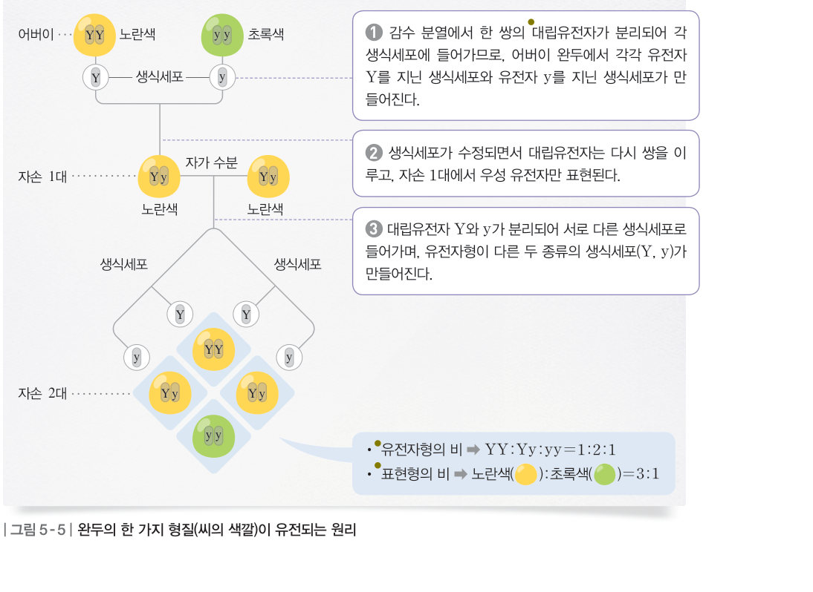
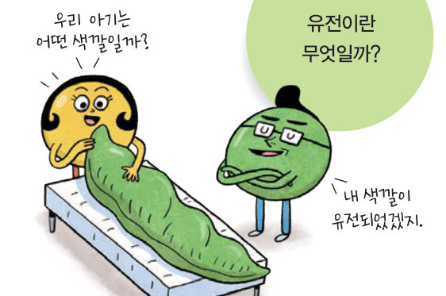
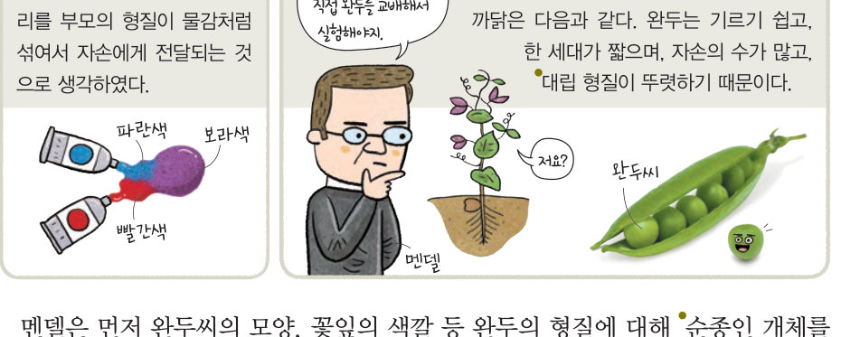
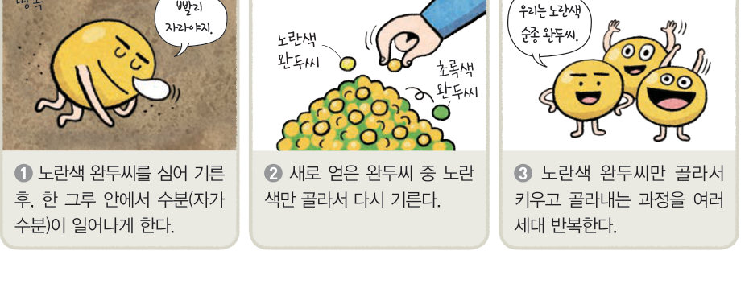
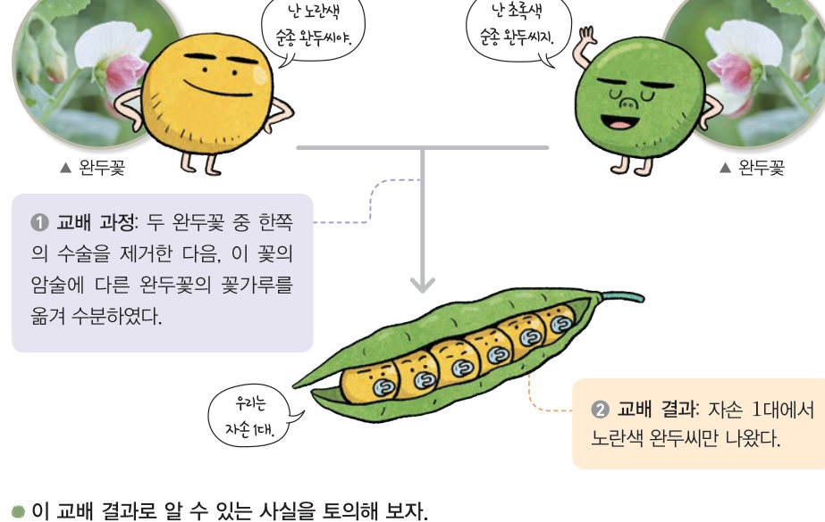

유전이란 무엇일까? 멘델의 완두 교배 실험을 퍼넷 사각형 교배기로 재현해 우열의 원리와 3:1의 비를 확인하고, 가상 동전을 수없이 던져 분리의 법칙이 1:2:1로 나타나는 까닭을 알아보자.
미술관에서 스페인 왕가의 초상화를 보니 얼굴 생김새가 다들 비슷했어. 얼굴 생김새와 같은 특징은 부모에게서 물려받은 것이래. 자녀가 부모의 특징을 물려받는 것을 어떻게 설명할 수 있을까?
생물이 지니고 있는 여러 가지 특성을 형질이라 하고, 부모의 형질이 자녀에게 전달되는 현상을 유전이라고 한다. 씨의 색깔이 노란색이거나 초록색인 것처럼 한 가지 형질에서 구분되는 변이를 대립 형질이라 한다. 멘델(1822~1884)은 완두를 이용한 교배 실험을 하여 유전 현상의 기본 원리를 설명하였다. 완두는 기르기 쉽고, 한 세대가 짧으며, 자손의 수가 많고, 대립 형질이 뚜렷하다.
멘델은 먼저 완두의 형질에 대해 순종(한 가지 형질을 나타내는 유전자의 구성이 같은 개체)인 개체를 얻었다. 유전자의 구성이 다른 개체는 잡종이라고 한다.



한 가지 형질에 대해 서로 다른 대립 형질을 지닌 순종의 개체끼리 교배하였을 때, 자손 1대에서 나타나는 형질을 우성, 나타나지 않는 형질을 열성이라고 하였다. 이를 우열의 원리라고 한다. (우성과 열성은 우수한 것과 관계가 없다.)
멘델은 자손 1대를 자가 수분하였다. 그 결과 자손 2대에서는 노란색 완두와 초록색 완두가 약 3:1의 비로 나타났다. 멘델은 생물에 한 가지 형질을 결정하는 한 쌍의 유전 인자(유전자)가 있으며, 생식세포가 만들어질 때 나뉘어 들어가고 수정될 때 다시 쌍을 이룬다는 가설을 세웠다. 대립 형질을 결정하는 유전자를 대립유전자라 하며, 우성은 대문자(Y), 열성은 소문자(y)로 표시한다. 유전자형은 유전자 구성을 기호로, 표현형은 겉으로 드러나는 형질이다.
쌍을 이루고 있던 대립유전자가 감수 분열이 일어날 때 분리되어 서로 다른 생식세포로 들어가는 유전 원리를 분리의 법칙이라고 한다.
| 평가 기준 | 스스로 평가 |
|---|---|
| 유전의 뜻을 알고, 멘델의 실험 과정을 설명할 수 있다. | |
| 분리의 법칙을 설명할 수 있다. |